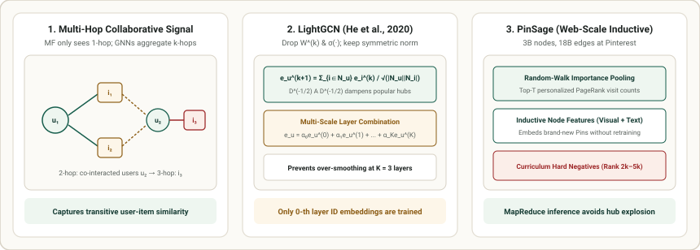

2. Graph-Based Collaborative Filtering: LightGCN & PinSage
Matrix Factorization and BPR treat every user–item interaction $(u, i)$ in isolation during the forward pass, relying solely on gradient updates to implicitly align co-occurring embeddings. Yet user–item interactions naturally form a bipartite graph $\mathcal{G} = (\mathcal{U} \cup \mathcal{I}, \mathcal{E})$ where multi-hop paths explicitly encode collaborative signal: $1$-hop captures a user's direct history, $2$-hop connects users who share tastes, and $3$-hop recommends items liked by those similar peers. This chapter derives LightGCN (He et al., 2020) and PinSage (Ying et al., 2018).

1. Why Standard GCNs Hurt Collaborative Filtering
Standard Graph Convolutional Networks (Kipf & Welling, 2017; NGCF, 2019) were designed for rich node-feature graphs (e.g., citation networks where each paper has a $1{,}000$-word bag-of-words vector). At each layer $k$, a standard GCN applies a learnable weight matrix $W^{(k)}$ and a nonlinear activation $\sigma(\cdot)$:
In pure ID-based collaborative filtering, however, each node starts with only a one-hot ID mapped to a free $d$-dimensional embedding $\mathbf{e}_u^{(0)} \in \mathbb{R}^d$. He et al. (SIGIR 2020) ran controlled ablations and proved that adding $W^{(k)}$ and $\sigma(\cdot)$ on top of free ID embeddings actually degrades recall and makes training harder! Stripping both away leaves pure neighborhood aggregation—which beats NGCF by $+16\%$ Recall@20 while training $3\times$ faster.
2. LightGCN: Symmetric Laplacian Propagation & Layer Combination
In LightGCN, only the $0$-th layer ID embeddings $E^{(0)} \in \mathbb{R}^{(M+N) \times d}$ are trainable parameters. At layer $k + 1$, user and item representations are updated via parameter-free symmetric square-root degree normalization:
Why $\frac{1}{\sqrt{|\mathcal{N}_u| |\mathcal{N}_i|}}$? If a blockbuster item $i$ has $|\mathcal{N}_i| = 100{,}000$ clicks, dividing by $\sqrt{|\mathcal{N}_i|}$ prevents that popular hub from dominating every neighbor's embedding during message passing.
Preventing Over-Smoothing via Multi-Scale Layer Combination: If you only used the final $K$-th layer embedding $\mathbf{e}_u^{(K)}$, stacking $K \ge 4$ layers would wash out local preferences (over-smoothing). LightGCN takes a weighted sum across all hops $k \in \{0, 1, \dots, K\}$ (typically $\alpha_k = \frac{1}{K+1}$ with $K = 3$):
In matrix form, with bipartite adjacency matrix $A = \begin{bmatrix} 0 & R \\ R^\top & 0 \end{bmatrix}$ and normalized Laplacian $\tilde{A} = D^{-1/2} A D^{-1/2}$, the entire $K$-layer stack collapses into a single polynomial filter:
3. PinSage: Scaling Inductive Graph Convolutions to Billions of Nodes
LightGCN is transductive: it requires the full adjacency matrix $\tilde{A}$ in GPU memory and cannot embed a brand-new item without retraining ID embeddings. At Pinterest ($3$ billion pins, $18$ billion edges), Ying et al. (KDD 2018) designed PinSage around three production breakthroughs:
- Inductive Rich Node Features: Every Pin $i$ is initialized not from a transductive ID table, but from concatenated visual (CNN/ViT image embedding), text (title/annotation embedding), and graph degree features—allowing zero-latency inference on newly uploaded Pins.
- Random-Walk Importance Neighborhoods: Instead of aggregating the full $2$-hop neighborhood (which explodes when a hub board has $10^6$ pins), PinSage simulates short random walks from node $u$ and selects the top-$T$ nodes with the highest L1-normalized visit counts (personalized PageRank approximation) as its fixed-size neighborhood.
- Curriculum Hard Negatives: In-batch random negatives are too easy at $3\text{B}$-item scale. PinSage ranks items for query $q$ by personalized PageRank score and samples hard negatives from ranks $2{,}000$–$5{,}000$—items that are topically close to $q$ but not truly relevant.
4. Worked Numerical Example: 2-Layer LightGCN Reveals 3-Hop Relevance
Consider $2$ users ($u_1, u_2$) and $3$ items ($i_1, i_2, i_3$). User $u_1$ clicked $i_1, i_2$ ($|\mathcal{N}_{u_1}|=2$); User $u_2$ clicked $i_1, i_2, i_3$ ($|\mathcal{N}_{u_2}|=3$). Thus item degrees are $|\mathcal{N}_{i_1}|=2, |\mathcal{N}_{i_2}|=2, |\mathcal{N}_{i_3}|=1$. Notice that under orthogonal $0$-th layer embeddings $\mathbf{e}_{u_1}^{(0)} \perp \mathbf{e}_{i_3}^{(0)}$, inner product $\langle \mathbf{e}_{u_1}^{(0)}, \mathbf{e}_{i_3}^{(0)} \rangle = 0$. What happens after $K=2$ LightGCN layers?
| Edge $(u, i)$ | User Degree $|\mathcal{N}_u|$ | Item Degree $|\mathcal{N}_i|$ | Laplacian Edge Weight $\tilde{A}_{ui} = \frac{1}{\sqrt{|\mathcal{N}_u||\mathcal{N}_i|}}$ | Role in Recommending $i_3$ to $u_1$ |
|---|---|---|---|---|
| $(u_1, i_1)$ and $(u_1, i_2)$ | $2$ | $2$ | $\frac{1}{\sqrt{2 \times 2}} = \mathbf{0.500}$ | 1-hop: Pulls $u_1$ toward shared items $i_1, i_2$ |
| $(u_2, i_1)$ and $(u_2, i_2)$ | $3$ | $2$ | $\frac{1}{\sqrt{3 \times 2}} = \mathbf{0.408}$ | 2-hop: Connects $i_1, i_2$ to peer user $u_2$ |
| $(u_2, i_3)$ (Target Item!) | $3$ | $1$ | $\frac{1}{\sqrt{3 \times 1}} = \mathbf{0.577}$ | 3-hop: Propagates $u_2$'s affinity into $i_3$ ($\hat{y}_{u_1, i_3} > 0$!) |
5. Minimal PyTorch Implementation: LightGCN Bipartite Propagation
import torch
import torch.nn as nn
class LightGCN(nn.Module):
def __init__(self, num_users: int, num_items: int, dim: int = 32, num_layers: int = 3):
super().__init__()
self.num_users = num_users
self.num_items = num_items
self.num_layers = num_layers
self.embedding = nn.Embedding(num_users + num_items, dim)
nn.init.normal_(self.embedding.weight, std=0.1)
def forward(self, norm_adj: torch.Tensor) -> tuple[torch.Tensor, torch.Tensor]:
"""Propagate 0-th layer embeddings through K symmetric Laplacian hops."""
ego_emb = self.embedding.weight
layers = [ego_emb]
for _ in range(self.num_layers):
ego_emb = torch.sparse.mm(norm_adj, ego_emb)
layers.append(ego_emb)
# Uniform layer combination: 1/(K+1) * sum_{k=0}^K E^(k)
final_emb = torch.stack(layers, dim=0).mean(dim=0)
return torch.split(final_emb, [self.num_users, self.num_items], dim=0)
# Build symmetric normalized adjacency D^{-1/2} A D^{-1/2} for our 2-user, 3-item graph
edges_u = [0, 0, 1, 1, 1] # u1={0}, u2={1}
edges_i = [2, 3, 2, 3, 4] # i1={2}, i2={3}, i3={4} (shifted by num_users=2)
row = torch.tensor(edges_u + edges_i)
col = torch.tensor(edges_i + edges_u)
deg = torch.bincount(row, minlength=5).float()
vals = 1.0 / torch.sqrt(deg[row] * deg[col])
norm_adj = torch.sparse_coo_tensor(torch.stack([row, col]), vals, (5, 5))
model = LightGCN(num_users=2, num_items=3, dim=8, num_layers=2)
u_emb, i_emb = model(norm_adj)
print("Predicted scores for u1 across [i1, i2, i3]:", (u_emb[0] @ i_emb.T).detach().numpy().round(3))